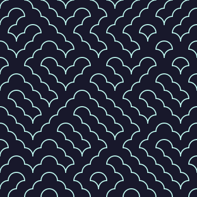

Truchet, made transferable.
A procedural tile study generated from a bounded, source-linked Seed Loom mechanism contract. Fixed seed, inspectable receipt, standalone SVG output.

Generator contract
- ID
- pattern.truchet
- Seed
- 35
- Grid
- 12 × 12
- Dimension
- 384 × 384
- Engine
- web-svg
Reproducibly generated from the pinned Seed Loom implementation. This is not a Notch shader, project export, or verified visual equivalence with Notch. The SVG is static and does not require runtime JavaScript.

Source: Notch 2026.2 Truchet reference. Producer PR.